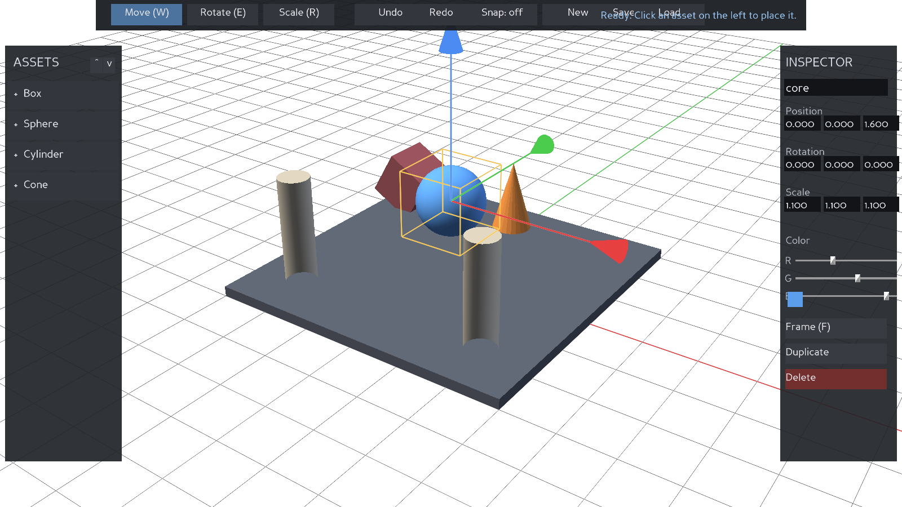
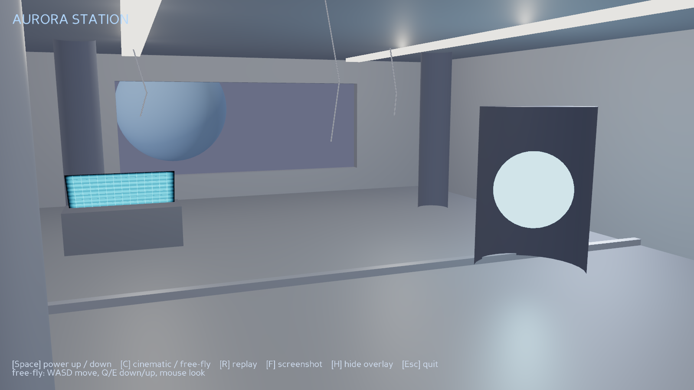

Forge
A 3D scene editor built in Panda3D
Forge is a working scene editor. You load models into a viewport, select them with a click, move and rotate and scale them with on-screen handles, edit their properties in an inspector, and save the result to a JSON scene that loads back exactly. Every change runs through an undo stack. It is the kind of tool a 3D artist uses without thinking about, rebuilt so the whole thing is visible in the code.
- Ray-based picking
- Move / rotate / scale gizmos
- DirectGUI panels
- Undo/redo command stack
- JSON scene format

Aurora Station
A real-time cinematic environment
Aurora Station is the interior of an orbital station that starts cold and dormant, then powers up: the ceiling strips come on, the reactor core and console begin to glow, light spills through the window, and a cinematic camera drifts through the room while it happens. The space is assembled from a modular kit, lit with a physically based pipeline, and finished with bloom. You can also fly through it by hand.
- simplepbr lighting
- Scripted lighting transition
- Custom GLSL hologram shader
- Bloom post-processing
- Cinematic and free-fly cameras